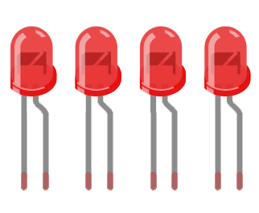
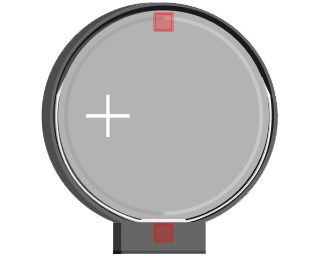

You Will Need:

LEDs

Coin Cell Battery
Sewable Battery Holder

Conductive Thread
It’s time to break away from breadboards and start sewing circuits into fabric! Soft circuits, also known as e-textiles, let you add some extra sparkle to clothing and costumes. A wired breadboard would certainly be a clunky way to light up a few LEDs on a piece of clothing, though, so in this project we’ll be going back to the basics: LEDs, a battery, and conductive thread.
Conductive thread is a sewable alternative to wire. This thread carries current from your battery to your components with a low amount of resistance, usually about 10-30 Ohms per foot. It’s easiest to attach the thread to the battery with a sewable coin cell battery holder. Besides ensuring good conduction between the thread and battery, a holder with an on/off switch will help the battery conserve energy when your project is not in use.
Before You Begin
Your battery wants to do as little work as possible. If you put a red LED in a parallel circuit with a blue LED, only your red LED will light up, because the red LED needs less current than the blue LED. Stick to one color of diode to ensure that your current gets divided evenly.
With a pair of pliers, grab the tip of one diode leg and curl it up towards the bulb. When the wire is completely rolled up, rotate the curl so that the LED can sit on a table and point straight up. Repeat for the other leg. Mark the positive leg with a permanent marker so that you don’t accidentally reverse the polarity while sewing!
Trace the crown template at the bottom of this page onto your fabric, or create your own pattern and cut it out. Lightly mark your LED placement with a pencil.
Thread a sewing needle with about two feet of conductive thread. Knot the thread and sew the anode (long leg, positive side) of the first LED down, looping the thread around the wire several times. Aim for about five stitches around every LED leg to ensure a good connection. Stitch in a straight line until you reach the next LED. Repeat this process until you have stitched down the anode of every LED.
Now identify the positive hole in your battery holder, usually marked 3V or simply + . The thread you’ve just sewn through the LED legs needs to connect here. Loop the thread through the hole several times, then knot off your thread and cut away any excess. You’re halfway done!
Repeat the sewing process for the other LED legs. Remember that your positive and negative threads should never touch or cross, or else you’ll end up with a short circuit.
When you’re done sewing and you’ve checked that no threads of opposite polarity are touching, slide a battery into your battery holder and flip the switch on.
Congratulations, you’ve created your first soft circuit! Now you can add flair to clothing, costumes, and accessories. Although you’ll be back to using code again in the next project, your circuit can still be interactive without a microcontroller. Experiment with separate pieces of fabric that create a closed circuit when their conductive pieces are pressed together. Try superhero gauntlets, a metallic purse snap, or friendship bracelets.
Make It Yours
Are your LEDs too bright? Try dipping the tip of each diode into acrylic paint for a more muted backlight effect.